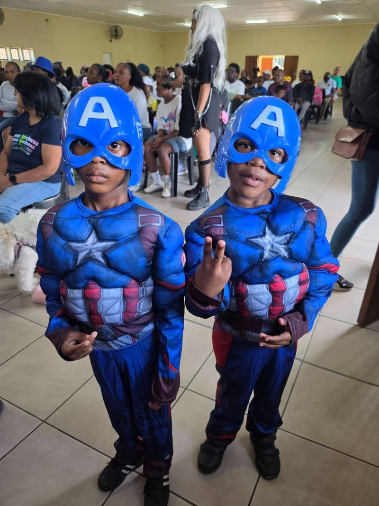
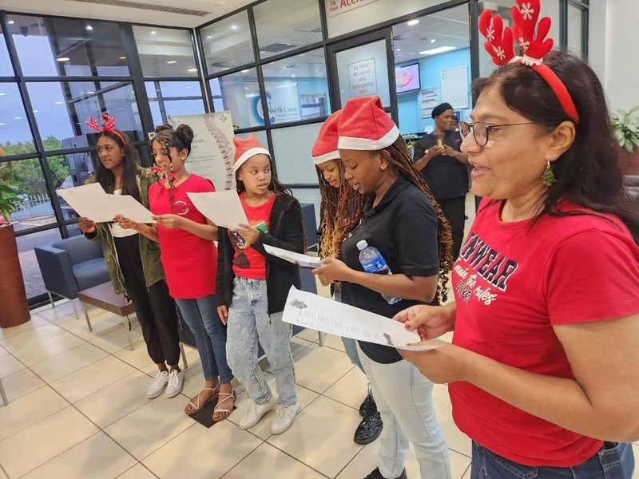

Community projects
Breakthrough Centre makes its impact on an ongoing basis, from poverty alleviation programmes to education and empowerment. We see a need and, where possible, we address the need.
Child protection is everyone's business
A highlight of our year is the Annual Child Protection Event, where the town comes to a standstill as little ones join together with strategic people to make a clarion call declaring an end to child abuse, upholding child protection as one community. The theme "Every child a superhero" sees every child dress up as their favourite superhero, march through the town and speak out against child abuse.
Would you like to partner with us in this exciting event? Contact us for more information.
In earlier years our learners, volunteers and a few brave clowns marched through the streets of Etete with home-made placards and slogans like "It shouldn't hurt to be a child".

Many times our hearts are broken when we hear of cases of child abuse that could have been avoided if more preventative measures had been in place. This is one of the reasons Breakthrough Centre focuses on prevention to eradicate this evil in society: empowering parents to detect unsafe environments and decisions. Our children are surrounded by unsafe environments, but we can teach them how to protect themselves, how to speak out against abuse, and how to guard themselves and their friends when there is danger. One of our slogans, "Every child has a voice", inspires children in the area of public speaking. We as guardians of this city have a responsibility to amplify this voice.
Breakthrough Centre
Standing up for children, in pictures
The photos move on their own; tap one to see it bigger.
Safety tips for parents and caregivers
The danger of trafficking and kidnapping affects every community. We put these tips together for parents in Etete and KwaDukuza. Please share them with other parents, caregivers and schools.
- Have a trusted person drop off and fetch your child when you can't, and arrange for someone to meet them if they walk part of the way home.
- Encourage children to walk home from school in groups, and to lock gates and doors if they're home alone.
- Agree that you'll never change pick-up plans without telling your child first, so "your mum sent me to fetch you" is never a reason to go with someone.
- Practise what to do if someone grabs them, and teach them emergency numbers.
- Teach children not to accept sweets or treats from strangers.
- If you work, consider an aftercare facility or a library where your child can wait safely.
- Know what your child does online and on devices, and set clear boundaries.
- Teach sons to respect girls and their boundaries, and daughters likewise. Discipline starts at home.
- Name a teacher or trusted adult your child can go to in an emergency, and speak well of police and safety officers so your child will trust them.

Practical help when it's needed most
- Blankets and food parcels: in keeping with Isaiah 58:7, our team has carried blankets and food parcels to elderly and needy neighbours in Etete, even in pouring rain.
- Feeding schemes: meals for hungry children, from our feeding programmes in 2013 to the plates of food shared at Kidz Club today.
- Gift boxes and school shoes: gift boxes for a hall full of children in August 2014, and new school shoes for learners in partnership with Lotus FM, where Jessica and Ps Trevor went on air to share the story.
- Mums and babies: diapers for babies, and clothing and linen for their mums.
- Hospital visits: visiting sick children and babies in hospital and bringing them gifts.
- Relief in hard times: hot meals during Covid-19, food hampers for families, and baby formula from Durban to Tugela during the 2021 unrest in KZN.
- Jumpstart: work-readiness training that prepares young people for their first jobs.
Outreach through the years
The photos move on their own; tap one to see it bigger.
Christmas cheer
Our team has taken Christmas carols to patients and staff at Alberlito Hospital in Ballito. The highlight of our calendar is the annual Kidz Club Christmas party, where every child receives a gift and a sumptuous treat, made possible by friends of the centre.

Health, hygiene and etiquette
Breakthrough Centre hosts girl and boy empowerment programmes, providing young people with hygiene packs while teaching them about health, hygiene and etiquette.
Preparing young people for their future careers starts now. So in whatever we teach, we train them for life.
Investing in local schools
Tomorrow's leaders are sitting in today's classrooms, so we invest in local public schools. Our programmes bring teachers, parents, officials and everyone with a stake in education around the same table. In 2026 Jessica Nair ran parent workshops and spoke at the Boys Talk and Girls Talk sessions at Radha Roopsingh Primary School. See our training work.
Potential Unleashed: contests and performances
Our inter-school contests in art, poetry and talent help young people find out what they're good at. Children get a stage, an audience and skills that can shape their future. Even during the pandemic we kept the contests going online.
Our young people
In 2008 our first Youth Day rally brought together about 170 young people for raps, art, modelling, poetry, singing and dancing, and we launched our Youth Club for 12 to 21-year-olds. Since then our youth have been on camps where they climb, splash in the river and make friends for life, and a youth help desk gives teenagers somewhere to turn with problems like drugs, abuse, pregnancy and peer pressure.
Skills for life
Our free sewing classes gave women from Etete a three-month course and a chance to earn, on machines donated by Siza Water. Over the years the centre has also offered computer classes, homework help, literacy and skills training, and HIV/AIDS and abuse awareness.
Friends who make it possible: our sponsors
None of this happens alone. Thank you to everyone who has stood with us, including:
- Sasko, for netball hoop stands and soccer goal posts
- Prince's Grant Bookclub, for library books for the Academy
- Lotus FM, for partnering with us on school shoes
- Bethel Baptist Church, who ministered to our children and served them a meal
- Metro World Child South Africa and Umhlali SAPS, who spoke to our children
- The Friends of the Kidz Club and every family who sponsors meals, treats and gifts
People who work with us
Recognised for community development
On 19 April 2012 Breakthrough Centre won 2nd place in the community category of the North Coast Big 5 Service Excellence Awards. We've also been honoured with 1st place in the KwaDukuza Municipality Mayoral Awards (Community Development category), the Nedbank Local Heroes Award (2009) and the In-house Club National Heroes Award (2006). Read our story.

Partner with us
Schools, businesses, churches and individuals work with us on outreach, events and relief. Let's talk.
Community questions
Does Breakthrough Centre help families in need in KwaDukuza?
Yes. Over the years we've handed out blankets, food parcels, hot meals, school shoes, gift boxes and baby formula to families in Etete and across KwaDukuza. If you know of a family in need, WhatsApp 081 775 1488.
When is the Child Protection event?
We host it every year with local schools and organisations. The date is announced on our Facebook page, and children and parents are welcome.
Can my business, school or church partner with you?
Please do. Businesses, schools, churches and individuals have sponsored meals, books, sports equipment, school shoes and gifts. WhatsApp 081 775 1488 and let's talk.